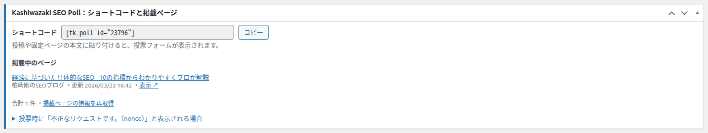
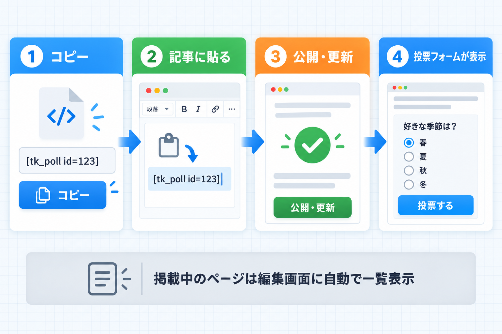
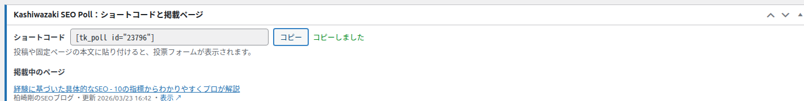
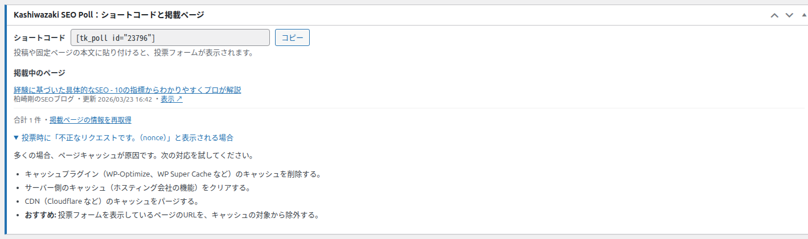

ショートコードと掲載ページ
編集画面の「ショートコードと掲載ページ」ボックスでは、投票を記事に載せるためのショートコードをコピーし、そのショートコードがどの記事に貼られているかを確認できます。

記事に投票を載せる流れ

コピーする
「ショートコード」欄の右の「コピー」を押します。横に「コピーしました」と2秒間表示されます。
記事に貼る
投票を載せたい投稿・固定ページなどの本文の、表示したい位置に貼り付けます。ブロックエディタでは「ショートコード」ブロックや段落に貼り付けます。
記事を保存する
記事を公開（更新）すると、その位置に投票フォームが表示されます。

ショートコード
| 項目 | 内容 |
|---|---|
| 形式 | [tk_poll id="123"]（数字はデータセットごとの番号） |
| 欄 | 読み取り専用（書き換えられません）。新規追加画面でも番号が入った状態で表示されます |
| 指定できる項目 | 番号（id）だけです |
| 画面の説明 | 「投稿や固定ページの本文に貼り付けると、投票フォームが表示されます。」 |
| 同じ記事に複数 | 別々のデータセットのショートコードを1つの記事に並べて貼れます |
データセットが公開されていないと表示されません
番号が間違っている、またはデータセットが下書き・非公開・ゴミ箱の場合、記事には「データが見つかりません。」と表示されます。番号が空や0のときは何も表示されません。
掲載中のページ
このデータセットのショートコードを本文に含むページの一覧です。公開済みだけでなく、下書き・非公開・レビュー待ちの記事も表示されます。
| 表示 | 意味 |
|---|---|
| タイトル | 記事のタイトル（無い場合は「(タイトルなし)」）。押すと記事の編集画面が開きます |
| 種類 | 投稿・固定ページなど |
| 状態 | 公開済み以外は「下書き」「非公開」「レビュー待ち」を強調表示 |
| N回使用 | 同じ記事に2回以上貼られているとき |
| ・更新 年/月/日 時:分 | 記事の最終更新日時 |
| 表示 ↗ | 公開済みの記事を新しいタブで開く |
| 合計 N 件 | 掲載ページの件数 |
| 現在このショートコードを掲載しているページはありません。 | どの記事にも貼られていないとき |
予約投稿は表示されません
公開予約中の記事は一覧に含まれません。公開された後に表示されます。
掲載ページの情報を再取得
一覧は最大1時間保存して使い回します。記事に貼った直後に出てこないときは、一覧の下の「掲載ページの情報を再取得」を押してください。画面が再読み込みされ、「掲載ページの情報を再取得しました。」と表示されます。
保存していない入力は消えます
「掲載ページの情報を再取得」は画面を読み込み直します。編集中の内容があれば、先に「更新」で保存してください。
「不正なリクエストです。（nonce）」と表示される場合
ボックスの最下部にある折りたたみを開くと、投票時にこのメッセージが出るときの対処が表示されます。

画面の説明: 「多くの場合、ページキャッシュが原因です。次の対応を試してください。」
- キャッシュプラグイン（WP-Optimize、WP Super Cache など）のキャッシュを削除する。
- サーバー側のキャッシュ（ホスティング会社の機能）をクリアする。
- CDN（Cloudflare など）のキャッシュをパージする。
- おすすめ: 投票フォームを表示しているページのURLを、キャッシュの対象から除外する。
理由と詳しい対処は トラブルシューティング を参照してください。
この画面で出るメッセージ
| メッセージ | 出るとき | 対処 |
|---|---|---|
| コピーしました | 「コピー」を押した直後（2秒間） | 不要 |
| 掲載ページの情報を再取得しました。 | 「掲載ページの情報を再取得」を押した後 | 不要 |
| セキュリティチェックに失敗しました。 | 再取得の確認が通らなかったとき | 編集画面を開き直してもう一度押す |
よくある使い方
同じ投票を複数の記事に載せたい
同じショートコードを複数の記事に貼れます。どの記事から投票しても同じデータセットに集計され、「掲載中のページ」にそれぞれの記事が表示されます。
1つの記事に同じ投票を2回貼った場合
2つとも表示され、それぞれグラフの表示や保存ができます。どちらかで投票すると、もう一方で投票しようとしたときは「既に投票しています」になります。
古い記事から投票を外したい
記事の本文からショートコードを削除して保存します。データセットや票は残ります。